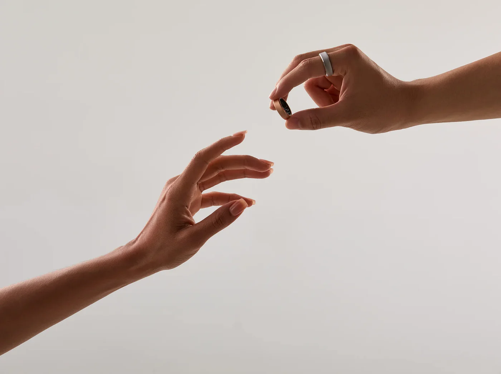
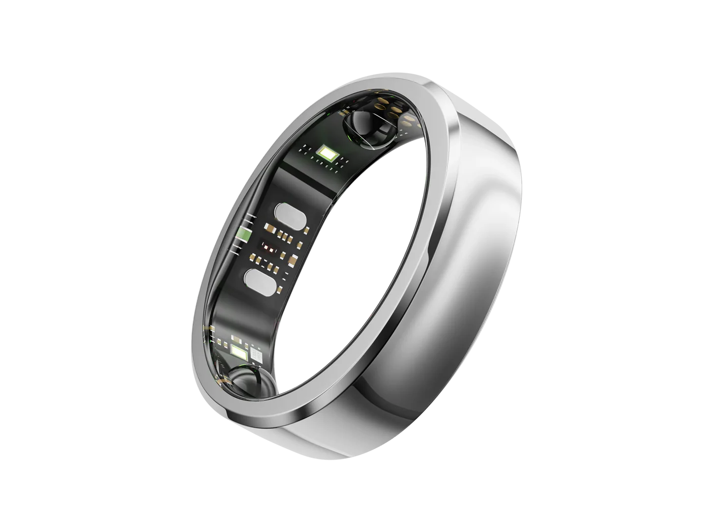

Trending Wellness Tech
Warum immer mehr Menschen ihre Smartwatch ablegen
Klobig am Handgelenk, vibriert um Mitternacht, stört beim Schlafen — die leise Abkehr von der Smartwatch hat begonnen.
Zum Edit

Trending Wellness Tech
Warum stilbewusste Frauen von Smartwatches zu Smart Rings wechseln
Eine Smartwatch lässt jedes Outfit wie Sportkleidung wirken. Ein Smart Ring sieht aus wie Schmuck — und misst genauso viel.
Zum Edit

Trending Wellness Tech
Der Wellness-Trend, der keine weitere App braucht
Genervt von Streaks, Erinnerungen und Dashboards? Die neue Wellness-Tech ist die, die du meistens ignorieren kannst.
Zum Edit